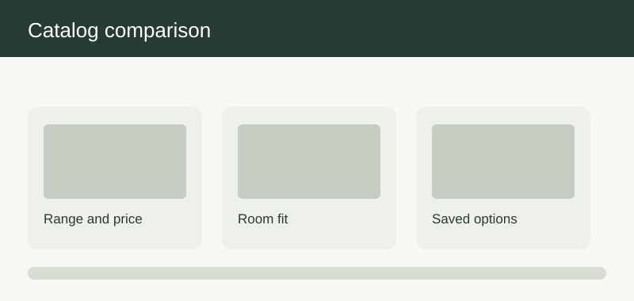

Shopping and discovery
Synthetic furniture commerce source page · 60 user stories
| ID | User story | Preliminary product solution | Implementation solution | Mockup and behavior |
|---|---|---|---|---|
| SHOPPINGANDDISCOVERY-01-1 | As a home shopper, I want the system to find a suitable starting product when comparing options for a first purchase, so that I can make a confident choice without a specialist present. | Preliminary product solution: The landing view groups kitchen ranges, individual cabinets, tables, and storage by the room problem they solve rather than by an internal stock code. A visitor can compare a ready arrangement with a buildable item while keeping its displayed starting price and expected lead time distinct. The first-time journey uses short explanations, a visible summary, and a clear path back to the previous choice. The current catalog entry choice and its next action remain visible. The flow explains how this choice affects the summary and which review remains open. When a range is unavailable in the delivery region, the view explains the limitation before the visitor enters a long configuration journey. | Implementation solution: The catalog team owns the range description, supported regions, and seasonal presentation; a merchandiser approves changes before publication. The customer-facing record keeps the chosen option and its stated uncertainty together. The handoff keeps the decision date, conditions, and open questions together. A product review confirms that every visible starting point opens the correct configuration or detail journey. Acceptance includes the home shopper path and the stated exception. |  |
| SHOPPINGANDDISCOVERY-01-2 | As an interior designer, I want the system to find a suitable starting product when preparing a proposal for a client, so that I can explain the tradeoffs and preserve the client's decisions. | Preliminary product solution: The landing view groups kitchen ranges, individual cabinets, tables, and storage by the room problem they solve rather than by an internal stock code. A visitor can compare a ready arrangement with a buildable item while keeping its displayed starting price and expected lead time distinct. The professional journey permits a concise comparison view and records the reason a proposed option was chosen. The current catalog entry choice and its next action remain visible. The flow explains how this choice affects the summary and which review remains open. When a range is unavailable in the delivery region, the view explains the limitation before the visitor enters a long configuration journey. | Implementation solution: The catalog team owns the range description, supported regions, and seasonal presentation; a merchandiser approves changes before publication. The handoff distinguishes a designer suggestion from a customer-approved decision. The handoff keeps the decision date, conditions, and open questions together. A product review confirms that every visible starting point opens the correct configuration or detail journey. Acceptance includes the interior designer path and the stated exception. | |
| SHOPPINGANDDISCOVERY-01-3 | As a returning customer, I want the system to find a suitable starting product when revisiting a saved project after several weeks, so that I can see what changed before making a new commitment. | Preliminary product solution: The landing view groups kitchen ranges, individual cabinets, tables, and storage by the room problem they solve rather than by an internal stock code. A visitor can compare a ready arrangement with a buildable item while keeping its displayed starting price and expected lead time distinct. The return journey identifies changed prices, assortment, or timing beside the previously saved choice. The current catalog entry choice and its next action remain visible. The flow explains how this choice affects the summary and which review remains open. When a range is unavailable in the delivery region, the view explains the limitation before the visitor enters a long configuration journey. | Implementation solution: The catalog team owns the range description, supported regions, and seasonal presentation; a merchandiser approves changes before publication. The saved record preserves the prior version while asking the customer to accept material changes. The handoff keeps the decision date, conditions, and open questions together. A product review confirms that every visible starting point opens the correct configuration or detail journey. Acceptance includes the returning customer path and the stated exception. | |
| SHOPPINGANDDISCOVERY-02-1 | As a home shopper, I want the system to narrow the catalog to relevant furniture when comparing options for a first purchase, so that I can make a confident choice without a specialist present. | Preliminary product solution: Search accepts room type, approximate dimensions, style, material preference, and budget in ordinary customer language. Suggestions retain the filters the visitor supplied and show why a result is relevant, including whether dimensions are exact or approximate. The first-time journey uses short explanations, a visible summary, and a clear path back to the previous choice. The current guided search choice and its next action remain visible. The flow explains how this choice affects the summary and which review remains open. If no item fits, the page preserves the search and proposes the closest alternatives without claiming that they meet a hard size constraint. | Implementation solution: The merchandising team maintains synonyms and exclusion terms; service staff can flag confusing searches for review. The customer-facing record keeps the chosen option and its stated uncertainty together. The handoff keeps the decision date, conditions, and open questions together. Weekly search review checks zero-result journeys and whether the suggested alternatives respect hard constraints. Acceptance includes the home shopper path and the stated exception. | |
| SHOPPINGANDDISCOVERY-02-2 | As an interior designer, I want the system to narrow the catalog to relevant furniture when preparing a proposal for a client, so that I can explain the tradeoffs and preserve the client's decisions. | Preliminary product solution: Search accepts room type, approximate dimensions, style, material preference, and budget in ordinary customer language. Suggestions retain the filters the visitor supplied and show why a result is relevant, including whether dimensions are exact or approximate. The professional journey permits a concise comparison view and records the reason a proposed option was chosen. The current guided search choice and its next action remain visible. The flow explains how this choice affects the summary and which review remains open. If no item fits, the page preserves the search and proposes the closest alternatives without claiming that they meet a hard size constraint. | Implementation solution: The merchandising team maintains synonyms and exclusion terms; service staff can flag confusing searches for review. The handoff distinguishes a designer suggestion from a customer-approved decision. The handoff keeps the decision date, conditions, and open questions together. Weekly search review checks zero-result journeys and whether the suggested alternatives respect hard constraints. Acceptance includes the interior designer path and the stated exception. | |
| SHOPPINGANDDISCOVERY-02-3 | As a returning customer, I want the system to narrow the catalog to relevant furniture when revisiting a saved project after several weeks, so that I can see what changed before making a new commitment. | Preliminary product solution: Search accepts room type, approximate dimensions, style, material preference, and budget in ordinary customer language. Suggestions retain the filters the visitor supplied and show why a result is relevant, including whether dimensions are exact or approximate. The return journey identifies changed prices, assortment, or timing beside the previously saved choice. The current guided search choice and its next action remain visible. The flow explains how this choice affects the summary and which review remains open. If no item fits, the page preserves the search and proposes the closest alternatives without claiming that they meet a hard size constraint. | Implementation solution: The merchandising team maintains synonyms and exclusion terms; service staff can flag confusing searches for review. The saved record preserves the prior version while asking the customer to accept material changes. The handoff keeps the decision date, conditions, and open questions together. Weekly search review checks zero-result journeys and whether the suggested alternatives respect hard constraints. Acceptance includes the returning customer path and the stated exception. | |
| SHOPPINGANDDISCOVERY-03-1 | As a home shopper, I want the system to filter products by usable dimensions when comparing options for a first purchase, so that I can make a confident choice without a specialist present. | Preliminary product solution: Width, height, and depth filters distinguish external furniture dimensions from required clearance around doors and drawers. The filter summary states the unit and whether the measurement belongs to the base item or the current configuration. The first-time journey uses short explanations, a visible summary, and a clear path back to the previous choice. The current dimension filters choice and its next action remain visible. The flow explains how this choice affects the summary and which review remains open. A product with missing dimensions is not shown as an exact match and is clearly marked for manual confirmation. | Implementation solution: Catalog owners maintain approved measurement values and the measurement method for each range. The customer-facing record keeps the chosen option and its stated uncertainty together. The handoff keeps the decision date, conditions, and open questions together. Acceptance sampling compares the visible filter result with the published product measurement sheet. Acceptance includes the home shopper path and the stated exception. | |
| SHOPPINGANDDISCOVERY-03-2 | As an interior designer, I want the system to filter products by usable dimensions when preparing a proposal for a client, so that I can explain the tradeoffs and preserve the client's decisions. | Preliminary product solution: Width, height, and depth filters distinguish external furniture dimensions from required clearance around doors and drawers. The filter summary states the unit and whether the measurement belongs to the base item or the current configuration. The professional journey permits a concise comparison view and records the reason a proposed option was chosen. The current dimension filters choice and its next action remain visible. The flow explains how this choice affects the summary and which review remains open. A product with missing dimensions is not shown as an exact match and is clearly marked for manual confirmation. | Implementation solution: Catalog owners maintain approved measurement values and the measurement method for each range. The handoff distinguishes a designer suggestion from a customer-approved decision. The handoff keeps the decision date, conditions, and open questions together. Acceptance sampling compares the visible filter result with the published product measurement sheet. Acceptance includes the interior designer path and the stated exception. | |
| SHOPPINGANDDISCOVERY-03-3 | As a returning customer, I want the system to filter products by usable dimensions when revisiting a saved project after several weeks, so that I can see what changed before making a new commitment. | Preliminary product solution: Width, height, and depth filters distinguish external furniture dimensions from required clearance around doors and drawers. The filter summary states the unit and whether the measurement belongs to the base item or the current configuration. The return journey identifies changed prices, assortment, or timing beside the previously saved choice. The current dimension filters choice and its next action remain visible. The flow explains how this choice affects the summary and which review remains open. A product with missing dimensions is not shown as an exact match and is clearly marked for manual confirmation. | Implementation solution: Catalog owners maintain approved measurement values and the measurement method for each range. The saved record preserves the prior version while asking the customer to accept material changes. The handoff keeps the decision date, conditions, and open questions together. Acceptance sampling compares the visible filter result with the published product measurement sheet. Acceptance includes the returning customer path and the stated exception. | |
| SHOPPINGANDDISCOVERY-04-1 | As a home shopper, I want the system to browse coherent style collections when comparing options for a first purchase, so that I can make a confident choice without a specialist present. | Preliminary product solution: Collections show combinations of fronts, handles, finishes, worktops, and freestanding furniture that the retailer considers visually coherent. The page explains which combinations are merely inspirational and which can be ordered together in one basket. The first-time journey uses short explanations, a visible summary, and a clear path back to the previous choice. The current style collections choice and its next action remain visible. The flow explains how this choice affects the summary and which review remains open. If an inspirational image contains an unavailable finish, the caption identifies the substitute and avoids a misleading purchase path. | Implementation solution: A content owner curates each collection and records the period for which the pictured assortment is valid. The customer-facing record keeps the chosen option and its stated uncertainty together. The handoff keeps the decision date, conditions, and open questions together. A release review checks that each featured image and linked product reflect the same available collection. Acceptance includes the home shopper path and the stated exception. | |
| SHOPPINGANDDISCOVERY-04-2 | As an interior designer, I want the system to browse coherent style collections when preparing a proposal for a client, so that I can explain the tradeoffs and preserve the client's decisions. | Preliminary product solution: Collections show combinations of fronts, handles, finishes, worktops, and freestanding furniture that the retailer considers visually coherent. The page explains which combinations are merely inspirational and which can be ordered together in one basket. The professional journey permits a concise comparison view and records the reason a proposed option was chosen. The current style collections choice and its next action remain visible. The flow explains how this choice affects the summary and which review remains open. If an inspirational image contains an unavailable finish, the caption identifies the substitute and avoids a misleading purchase path. | Implementation solution: A content owner curates each collection and records the period for which the pictured assortment is valid. The handoff distinguishes a designer suggestion from a customer-approved decision. The handoff keeps the decision date, conditions, and open questions together. A release review checks that each featured image and linked product reflect the same available collection. Acceptance includes the interior designer path and the stated exception. | |
| SHOPPINGANDDISCOVERY-04-3 | As a returning customer, I want the system to browse coherent style collections when revisiting a saved project after several weeks, so that I can see what changed before making a new commitment. | Preliminary product solution: Collections show combinations of fronts, handles, finishes, worktops, and freestanding furniture that the retailer considers visually coherent. The page explains which combinations are merely inspirational and which can be ordered together in one basket. The return journey identifies changed prices, assortment, or timing beside the previously saved choice. The current style collections choice and its next action remain visible. The flow explains how this choice affects the summary and which review remains open. If an inspirational image contains an unavailable finish, the caption identifies the substitute and avoids a misleading purchase path. | Implementation solution: A content owner curates each collection and records the period for which the pictured assortment is valid. The saved record preserves the prior version while asking the customer to accept material changes. The handoff keeps the decision date, conditions, and open questions together. A release review checks that each featured image and linked product reflect the same available collection. Acceptance includes the returning customer path and the stated exception. | |
| SHOPPINGANDDISCOVERY-05-1 | As a home shopper, I want the system to compare finish samples before deciding when comparing options for a first purchase, so that I can make a confident choice without a specialist present. | Preliminary product solution: The product page shows material swatches with plain language notes on color variation, texture, and care expectations. A customer can request a physical sample and later return to the exact furniture configuration that prompted the request. The first-time journey uses short explanations, a visible summary, and a clear path back to the previous choice. The current finish samples choice and its next action remain visible. The flow explains how this choice affects the summary and which review remains open. Screen colors are presented as illustrative; the page does not imply a digital swatch guarantees a real world shade. | Implementation solution: The sample fulfillment team owns availability and delivery promises while the catalog team owns sample-to-product mappings. The customer-facing record keeps the chosen option and its stated uncertainty together. The handoff keeps the decision date, conditions, and open questions together. A sampled journey verifies the requested swatch, the recorded product association, and the follow-up message. Acceptance includes the home shopper path and the stated exception. | |
| SHOPPINGANDDISCOVERY-05-2 | As an interior designer, I want the system to compare finish samples before deciding when preparing a proposal for a client, so that I can explain the tradeoffs and preserve the client's decisions. | Preliminary product solution: The product page shows material swatches with plain language notes on color variation, texture, and care expectations. A customer can request a physical sample and later return to the exact furniture configuration that prompted the request. The professional journey permits a concise comparison view and records the reason a proposed option was chosen. The current finish samples choice and its next action remain visible. The flow explains how this choice affects the summary and which review remains open. Screen colors are presented as illustrative; the page does not imply a digital swatch guarantees a real world shade. | Implementation solution: The sample fulfillment team owns availability and delivery promises while the catalog team owns sample-to-product mappings. The handoff distinguishes a designer suggestion from a customer-approved decision. The handoff keeps the decision date, conditions, and open questions together. A sampled journey verifies the requested swatch, the recorded product association, and the follow-up message. Acceptance includes the interior designer path and the stated exception. | |
| SHOPPINGANDDISCOVERY-05-3 | As a returning customer, I want the system to compare finish samples before deciding when revisiting a saved project after several weeks, so that I can see what changed before making a new commitment. | Preliminary product solution: The product page shows material swatches with plain language notes on color variation, texture, and care expectations. A customer can request a physical sample and later return to the exact furniture configuration that prompted the request. The return journey identifies changed prices, assortment, or timing beside the previously saved choice. The current finish samples choice and its next action remain visible. The flow explains how this choice affects the summary and which review remains open. Screen colors are presented as illustrative; the page does not imply a digital swatch guarantees a real world shade. | Implementation solution: The sample fulfillment team owns availability and delivery promises while the catalog team owns sample-to-product mappings. The saved record preserves the prior version while asking the customer to accept material changes. The handoff keeps the decision date, conditions, and open questions together. A sampled journey verifies the requested swatch, the recorded product association, and the follow-up message. Acceptance includes the returning customer path and the stated exception. | |
| SHOPPINGANDDISCOVERY-06-1 | As a home shopper, I want the system to turn an inspiration room into a shopping shortlist when comparing options for a first purchase, so that I can make a confident choice without a specialist present. | Preliminary product solution: An editorial room scene lists the furniture, visible finishes, and optional accessories used to create the scene. The customer can save the scene as a shortlist and replace an item without losing the room concept. The first-time journey uses short explanations, a visible summary, and a clear path back to the previous choice. The current room inspiration choice and its next action remain visible. The flow explains how this choice affects the summary and which review remains open. If a pictured accessory is decorative only, it is identified as such and excluded from the basket estimate. | Implementation solution: Editorial staff approve scenes and product associations; commercial staff review changes in price or assortment. The customer-facing record keeps the chosen option and its stated uncertainty together. The handoff keeps the decision date, conditions, and open questions together. A scene audit checks that every purchasable component has a reachable product page. Acceptance includes the home shopper path and the stated exception. | |
| SHOPPINGANDDISCOVERY-06-2 | As an interior designer, I want the system to turn an inspiration room into a shopping shortlist when preparing a proposal for a client, so that I can explain the tradeoffs and preserve the client's decisions. | Preliminary product solution: An editorial room scene lists the furniture, visible finishes, and optional accessories used to create the scene. The customer can save the scene as a shortlist and replace an item without losing the room concept. The professional journey permits a concise comparison view and records the reason a proposed option was chosen. The current room inspiration choice and its next action remain visible. The flow explains how this choice affects the summary and which review remains open. If a pictured accessory is decorative only, it is identified as such and excluded from the basket estimate. | Implementation solution: Editorial staff approve scenes and product associations; commercial staff review changes in price or assortment. The handoff distinguishes a designer suggestion from a customer-approved decision. The handoff keeps the decision date, conditions, and open questions together. A scene audit checks that every purchasable component has a reachable product page. Acceptance includes the interior designer path and the stated exception. | |
| SHOPPINGANDDISCOVERY-06-3 | As a returning customer, I want the system to turn an inspiration room into a shopping shortlist when revisiting a saved project after several weeks, so that I can see what changed before making a new commitment. | Preliminary product solution: An editorial room scene lists the furniture, visible finishes, and optional accessories used to create the scene. The customer can save the scene as a shortlist and replace an item without losing the room concept. The return journey identifies changed prices, assortment, or timing beside the previously saved choice. The current room inspiration choice and its next action remain visible. The flow explains how this choice affects the summary and which review remains open. If a pictured accessory is decorative only, it is identified as such and excluded from the basket estimate. | Implementation solution: Editorial staff approve scenes and product associations; commercial staff review changes in price or assortment. The saved record preserves the prior version while asking the customer to accept material changes. The handoff keeps the decision date, conditions, and open questions together. A scene audit checks that every purchasable component has a reachable product page. Acceptance includes the returning customer path and the stated exception. | |
| SHOPPINGANDDISCOVERY-07-1 | As a home shopper, I want the system to compare shortlisted options side by side when comparing options for a first purchase, so that I can make a confident choice without a specialist present. | Preliminary product solution: The comparison board places price range, size, finish choices, delivery estimate, and customization freedom in the same order for each selected item. It highlights differences relevant to the customer's room constraints without presenting subjective style judgments as facts. The first-time journey uses short explanations, a visible summary, and a clear path back to the previous choice. The current comparison board choice and its next action remain visible. The flow explains how this choice affects the summary and which review remains open. If two items use different measurement conventions, the board labels the difference instead of forcing a misleading numeric comparison. | Implementation solution: Product operations own the comparison attributes and a category manager signs off new attributes. The customer-facing record keeps the chosen option and its stated uncertainty together. The handoff keeps the decision date, conditions, and open questions together. A review verifies that removing a product does not erase the remaining shortlist. Acceptance includes the home shopper path and the stated exception. | |
| SHOPPINGANDDISCOVERY-07-2 | As an interior designer, I want the system to compare shortlisted options side by side when preparing a proposal for a client, so that I can explain the tradeoffs and preserve the client's decisions. | Preliminary product solution: The comparison board places price range, size, finish choices, delivery estimate, and customization freedom in the same order for each selected item. It highlights differences relevant to the customer's room constraints without presenting subjective style judgments as facts. The professional journey permits a concise comparison view and records the reason a proposed option was chosen. The current comparison board choice and its next action remain visible. The flow explains how this choice affects the summary and which review remains open. If two items use different measurement conventions, the board labels the difference instead of forcing a misleading numeric comparison. | Implementation solution: Product operations own the comparison attributes and a category manager signs off new attributes. The handoff distinguishes a designer suggestion from a customer-approved decision. The handoff keeps the decision date, conditions, and open questions together. A review verifies that removing a product does not erase the remaining shortlist. Acceptance includes the interior designer path and the stated exception. | |
| SHOPPINGANDDISCOVERY-07-3 | As a returning customer, I want the system to compare shortlisted options side by side when revisiting a saved project after several weeks, so that I can see what changed before making a new commitment. | Preliminary product solution: The comparison board places price range, size, finish choices, delivery estimate, and customization freedom in the same order for each selected item. It highlights differences relevant to the customer's room constraints without presenting subjective style judgments as facts. The return journey identifies changed prices, assortment, or timing beside the previously saved choice. The current comparison board choice and its next action remain visible. The flow explains how this choice affects the summary and which review remains open. If two items use different measurement conventions, the board labels the difference instead of forcing a misleading numeric comparison. | Implementation solution: Product operations own the comparison attributes and a category manager signs off new attributes. The saved record preserves the prior version while asking the customer to accept material changes. The handoff keeps the decision date, conditions, and open questions together. A review verifies that removing a product does not erase the remaining shortlist. Acceptance includes the returning customer path and the stated exception. | |
| SHOPPINGANDDISCOVERY-08-1 | As a home shopper, I want the system to understand availability before customization when comparing options for a first purchase, so that I can make a confident choice without a specialist present. | Preliminary product solution: The product page separates items ready to dispatch, made to order items, and items requiring a supplier confirmation. Availability is phrased as an estimate at the point shown and changes visibly when a selected option affects it. The first-time journey uses short explanations, a visible summary, and a clear path back to the previous choice. The current availability choice and its next action remain visible. The flow explains how this choice affects the summary and which review remains open. A provisional supplier estimate cannot be rendered as a guaranteed delivery date. | Implementation solution: Supply planning supplies lead-time bands and the customer team approves customer-facing wording. The customer-facing record keeps the chosen option and its stated uncertainty together. The handoff keeps the decision date, conditions, and open questions together. Acceptance checks a standard configuration and a slower custom finish against current lead-time rules. Acceptance includes the home shopper path and the stated exception. | |
| SHOPPINGANDDISCOVERY-08-2 | As an interior designer, I want the system to understand availability before customization when preparing a proposal for a client, so that I can explain the tradeoffs and preserve the client's decisions. | Preliminary product solution: The product page separates items ready to dispatch, made to order items, and items requiring a supplier confirmation. Availability is phrased as an estimate at the point shown and changes visibly when a selected option affects it. The professional journey permits a concise comparison view and records the reason a proposed option was chosen. The current availability choice and its next action remain visible. The flow explains how this choice affects the summary and which review remains open. A provisional supplier estimate cannot be rendered as a guaranteed delivery date. | Implementation solution: Supply planning supplies lead-time bands and the customer team approves customer-facing wording. The handoff distinguishes a designer suggestion from a customer-approved decision. The handoff keeps the decision date, conditions, and open questions together. Acceptance checks a standard configuration and a slower custom finish against current lead-time rules. Acceptance includes the interior designer path and the stated exception. | |
| SHOPPINGANDDISCOVERY-08-3 | As a returning customer, I want the system to understand availability before customization when revisiting a saved project after several weeks, so that I can see what changed before making a new commitment. | Preliminary product solution: The product page separates items ready to dispatch, made to order items, and items requiring a supplier confirmation. Availability is phrased as an estimate at the point shown and changes visibly when a selected option affects it. The return journey identifies changed prices, assortment, or timing beside the previously saved choice. The current availability choice and its next action remain visible. The flow explains how this choice affects the summary and which review remains open. A provisional supplier estimate cannot be rendered as a guaranteed delivery date. | Implementation solution: Supply planning supplies lead-time bands and the customer team approves customer-facing wording. The saved record preserves the prior version while asking the customer to accept material changes. The handoff keeps the decision date, conditions, and open questions together. Acceptance checks a standard configuration and a slower custom finish against current lead-time rules. Acceptance includes the returning customer path and the stated exception. | |
| SHOPPINGANDDISCOVERY-09-1 | As a home shopper, I want the system to see what changes the displayed price when comparing options for a first purchase, so that I can make a confident choice without a specialist present. | Preliminary product solution: The displayed price identifies the base item and summarizes selected finishes, dimensions, accessories, and services that change the total. A visitor can inspect the component-level price explanation before placing the item in a basket. The first-time journey uses short explanations, a visible summary, and a clear path back to the previous choice. The current price transparency choice and its next action remain visible. The flow explains how this choice affects the summary and which review remains open. If an optional service needs a later survey, the page gives an estimate rather than a fixed charge. | Implementation solution: Commercial operations own the price book and a second approver verifies each promotion or surcharge. The customer-facing record keeps the chosen option and its stated uncertainty together. The handoff keeps the decision date, conditions, and open questions together. A sample review reconciles a visible estimate with the same choices in the basket. Acceptance includes the home shopper path and the stated exception. | |
| SHOPPINGANDDISCOVERY-09-2 | As an interior designer, I want the system to see what changes the displayed price when preparing a proposal for a client, so that I can explain the tradeoffs and preserve the client's decisions. | Preliminary product solution: The displayed price identifies the base item and summarizes selected finishes, dimensions, accessories, and services that change the total. A visitor can inspect the component-level price explanation before placing the item in a basket. The professional journey permits a concise comparison view and records the reason a proposed option was chosen. The current price transparency choice and its next action remain visible. The flow explains how this choice affects the summary and which review remains open. If an optional service needs a later survey, the page gives an estimate rather than a fixed charge. | Implementation solution: Commercial operations own the price book and a second approver verifies each promotion or surcharge. The handoff distinguishes a designer suggestion from a customer-approved decision. The handoff keeps the decision date, conditions, and open questions together. A sample review reconciles a visible estimate with the same choices in the basket. Acceptance includes the interior designer path and the stated exception. | |
| SHOPPINGANDDISCOVERY-09-3 | As a returning customer, I want the system to see what changes the displayed price when revisiting a saved project after several weeks, so that I can see what changed before making a new commitment. | Preliminary product solution: The displayed price identifies the base item and summarizes selected finishes, dimensions, accessories, and services that change the total. A visitor can inspect the component-level price explanation before placing the item in a basket. The return journey identifies changed prices, assortment, or timing beside the previously saved choice. The current price transparency choice and its next action remain visible. The flow explains how this choice affects the summary and which review remains open. If an optional service needs a later survey, the page gives an estimate rather than a fixed charge. | Implementation solution: Commercial operations own the price book and a second approver verifies each promotion or surcharge. The saved record preserves the prior version while asking the customer to accept material changes. The handoff keeps the decision date, conditions, and open questions together. A sample review reconciles a visible estimate with the same choices in the basket. Acceptance includes the returning customer path and the stated exception. | |
| SHOPPINGANDDISCOVERY-10-1 | As a home shopper, I want the system to save products across shopping sessions when comparing options for a first purchase, so that I can make a confident choice without a specialist present. | Preliminary product solution: A saved list retains product identity, selected options, intended room, and the price estimate seen when saved. On return, the list shows which estimates or available choices have changed since the prior visit. The first-time journey uses short explanations, a visible summary, and a clear path back to the previous choice. The current saved products choice and its next action remain visible. The flow explains how this choice affects the summary and which review remains open. A retired finish is not silently exchanged for another; the customer receives a clear replacement decision. | Implementation solution: Customer account owners define retention and consent wording while merchandising supplies replacement guidance. The customer-facing record keeps the chosen option and its stated uncertainty together. The handoff keeps the decision date, conditions, and open questions together. A return journey verifies change notices and the ability to remove an outdated item. Acceptance includes the home shopper path and the stated exception. | |
| SHOPPINGANDDISCOVERY-10-2 | As an interior designer, I want the system to save products across shopping sessions when preparing a proposal for a client, so that I can explain the tradeoffs and preserve the client's decisions. | Preliminary product solution: A saved list retains product identity, selected options, intended room, and the price estimate seen when saved. On return, the list shows which estimates or available choices have changed since the prior visit. The professional journey permits a concise comparison view and records the reason a proposed option was chosen. The current saved products choice and its next action remain visible. The flow explains how this choice affects the summary and which review remains open. A retired finish is not silently exchanged for another; the customer receives a clear replacement decision. | Implementation solution: Customer account owners define retention and consent wording while merchandising supplies replacement guidance. The handoff distinguishes a designer suggestion from a customer-approved decision. The handoff keeps the decision date, conditions, and open questions together. A return journey verifies change notices and the ability to remove an outdated item. Acceptance includes the interior designer path and the stated exception. | |
| SHOPPINGANDDISCOVERY-10-3 | As a returning customer, I want the system to save products across shopping sessions when revisiting a saved project after several weeks, so that I can see what changed before making a new commitment. | Preliminary product solution: A saved list retains product identity, selected options, intended room, and the price estimate seen when saved. On return, the list shows which estimates or available choices have changed since the prior visit. The return journey identifies changed prices, assortment, or timing beside the previously saved choice. The current saved products choice and its next action remain visible. The flow explains how this choice affects the summary and which review remains open. A retired finish is not silently exchanged for another; the customer receives a clear replacement decision. | Implementation solution: Customer account owners define retention and consent wording while merchandising supplies replacement guidance. The saved record preserves the prior version while asking the customer to accept material changes. The handoff keeps the decision date, conditions, and open questions together. A return journey verifies change notices and the ability to remove an outdated item. Acceptance includes the returning customer path and the stated exception. | |
| SHOPPINGANDDISCOVERY-11-1 | As a home shopper, I want the system to shop furniture with accessible controls when comparing options for a first purchase, so that I can make a confident choice without a specialist present. | Preliminary product solution: Filters, option selectors, comparison actions, and price explanations have clear labels and a predictable reading order. The experience exposes the same selection information without relying on color alone or on a hover-only picture. The first-time journey uses short explanations, a visible summary, and a clear path back to the previous choice. The current accessibility choices choice and its next action remain visible. The flow explains how this choice affects the summary and which review remains open. An interactive visual may be optional, but the shopper can reach an equivalent product decision through text controls. | Implementation solution: Design and content teams review accessible names and plain language; service staff report recurring barriers. The customer-facing record keeps the chosen option and its stated uncertainty together. The handoff keeps the decision date, conditions, and open questions together. Acceptance includes keyboard-only completion of shortlist, comparison, and option selection. Acceptance includes the home shopper path and the stated exception. | |
| SHOPPINGANDDISCOVERY-11-2 | As an interior designer, I want the system to shop furniture with accessible controls when preparing a proposal for a client, so that I can explain the tradeoffs and preserve the client's decisions. | Preliminary product solution: Filters, option selectors, comparison actions, and price explanations have clear labels and a predictable reading order. The experience exposes the same selection information without relying on color alone or on a hover-only picture. The professional journey permits a concise comparison view and records the reason a proposed option was chosen. The current accessibility choices choice and its next action remain visible. The flow explains how this choice affects the summary and which review remains open. An interactive visual may be optional, but the shopper can reach an equivalent product decision through text controls. | Implementation solution: Design and content teams review accessible names and plain language; service staff report recurring barriers. The handoff distinguishes a designer suggestion from a customer-approved decision. The handoff keeps the decision date, conditions, and open questions together. Acceptance includes keyboard-only completion of shortlist, comparison, and option selection. Acceptance includes the interior designer path and the stated exception. | |
| SHOPPINGANDDISCOVERY-11-3 | As a returning customer, I want the system to shop furniture with accessible controls when revisiting a saved project after several weeks, so that I can see what changed before making a new commitment. | Preliminary product solution: Filters, option selectors, comparison actions, and price explanations have clear labels and a predictable reading order. The experience exposes the same selection information without relying on color alone or on a hover-only picture. The return journey identifies changed prices, assortment, or timing beside the previously saved choice. The current accessibility choices choice and its next action remain visible. The flow explains how this choice affects the summary and which review remains open. An interactive visual may be optional, but the shopper can reach an equivalent product decision through text controls. | Implementation solution: Design and content teams review accessible names and plain language; service staff report recurring barriers. The saved record preserves the prior version while asking the customer to accept material changes. The handoff keeps the decision date, conditions, and open questions together. Acceptance includes keyboard-only completion of shortlist, comparison, and option selection. Acceptance includes the returning customer path and the stated exception. | |
| SHOPPINGANDDISCOVERY-12-1 | As a home shopper, I want the system to continue shopping on a smaller screen when comparing options for a first purchase, so that I can make a confident choice without a specialist present. | Preliminary product solution: Mobile product cards prioritize a clear item name, room fit, starting price, and the next action without hiding option constraints. A partially completed selection remains available when the shopper changes orientation or returns to the list. The first-time journey uses short explanations, a visible summary, and a clear path back to the previous choice. The current mobile shopping choice and its next action remain visible. The flow explains how this choice affects the summary and which review remains open. Large comparison tables become a readable sequence of attributes rather than a clipped desktop layout. | Implementation solution: The mobile product owner approves responsive content order and key touch targets. The customer-facing record keeps the chosen option and its stated uncertainty together. The handoff keeps the decision date, conditions, and open questions together. A mobile walkthrough checks the full path from discovery to a saved configured item. Acceptance includes the home shopper path and the stated exception. | |
| SHOPPINGANDDISCOVERY-12-2 | As an interior designer, I want the system to continue shopping on a smaller screen when preparing a proposal for a client, so that I can explain the tradeoffs and preserve the client's decisions. | Preliminary product solution: Mobile product cards prioritize a clear item name, room fit, starting price, and the next action without hiding option constraints. A partially completed selection remains available when the shopper changes orientation or returns to the list. The professional journey permits a concise comparison view and records the reason a proposed option was chosen. The current mobile shopping choice and its next action remain visible. The flow explains how this choice affects the summary and which review remains open. Large comparison tables become a readable sequence of attributes rather than a clipped desktop layout. | Implementation solution: The mobile product owner approves responsive content order and key touch targets. The handoff distinguishes a designer suggestion from a customer-approved decision. The handoff keeps the decision date, conditions, and open questions together. A mobile walkthrough checks the full path from discovery to a saved configured item. Acceptance includes the interior designer path and the stated exception. | |
| SHOPPINGANDDISCOVERY-12-3 | As a returning customer, I want the system to continue shopping on a smaller screen when revisiting a saved project after several weeks, so that I can see what changed before making a new commitment. | Preliminary product solution: Mobile product cards prioritize a clear item name, room fit, starting price, and the next action without hiding option constraints. A partially completed selection remains available when the shopper changes orientation or returns to the list. The return journey identifies changed prices, assortment, or timing beside the previously saved choice. The current mobile shopping choice and its next action remain visible. The flow explains how this choice affects the summary and which review remains open. Large comparison tables become a readable sequence of attributes rather than a clipped desktop layout. | Implementation solution: The mobile product owner approves responsive content order and key touch targets. The saved record preserves the prior version while asking the customer to accept material changes. The handoff keeps the decision date, conditions, and open questions together. A mobile walkthrough checks the full path from discovery to a saved configured item. Acceptance includes the returning customer path and the stated exception. | |
| SHOPPINGANDDISCOVERY-13-1 | As a home shopper, I want the system to see which offers apply to chosen furniture when comparing options for a first purchase, so that I can make a confident choice without a specialist present. | Preliminary product solution: Promotions state eligible ranges, dates, minimum basket values, and whether custom dimensions or services are excluded. The product page indicates a possible offer while the basket confirms the exact eligibility for the chosen configuration. The first-time journey uses short explanations, a visible summary, and a clear path back to the previous choice. The current promotion eligibility choice and its next action remain visible. The flow explains how this choice affects the summary and which review remains open. Expired or incompatible promotions do not remain visually attached to an item after its options change. | Implementation solution: Campaign managers supply terms and pricing operations approve eligibility before launch. The customer-facing record keeps the chosen option and its stated uncertainty together. The handoff keeps the decision date, conditions, and open questions together. A campaign test checks qualifying and nonqualifying configurations with the same visible terms. Acceptance includes the home shopper path and the stated exception. | |
| SHOPPINGANDDISCOVERY-13-2 | As an interior designer, I want the system to see which offers apply to chosen furniture when preparing a proposal for a client, so that I can explain the tradeoffs and preserve the client's decisions. | Preliminary product solution: Promotions state eligible ranges, dates, minimum basket values, and whether custom dimensions or services are excluded. The product page indicates a possible offer while the basket confirms the exact eligibility for the chosen configuration. The professional journey permits a concise comparison view and records the reason a proposed option was chosen. The current promotion eligibility choice and its next action remain visible. The flow explains how this choice affects the summary and which review remains open. Expired or incompatible promotions do not remain visually attached to an item after its options change. | Implementation solution: Campaign managers supply terms and pricing operations approve eligibility before launch. The handoff distinguishes a designer suggestion from a customer-approved decision. The handoff keeps the decision date, conditions, and open questions together. A campaign test checks qualifying and nonqualifying configurations with the same visible terms. Acceptance includes the interior designer path and the stated exception. | |
| SHOPPINGANDDISCOVERY-13-3 | As a returning customer, I want the system to see which offers apply to chosen furniture when revisiting a saved project after several weeks, so that I can see what changed before making a new commitment. | Preliminary product solution: Promotions state eligible ranges, dates, minimum basket values, and whether custom dimensions or services are excluded. The product page indicates a possible offer while the basket confirms the exact eligibility for the chosen configuration. The return journey identifies changed prices, assortment, or timing beside the previously saved choice. The current promotion eligibility choice and its next action remain visible. The flow explains how this choice affects the summary and which review remains open. Expired or incompatible promotions do not remain visually attached to an item after its options change. | Implementation solution: Campaign managers supply terms and pricing operations approve eligibility before launch. The saved record preserves the prior version while asking the customer to accept material changes. The handoff keeps the decision date, conditions, and open questions together. A campaign test checks qualifying and nonqualifying configurations with the same visible terms. Acceptance includes the returning customer path and the stated exception. | |
| SHOPPINGANDDISCOVERY-14-1 | As a home shopper, I want the system to read reviews relevant to a product configuration when comparing options for a first purchase, so that I can make a confident choice without a specialist present. | Preliminary product solution: Reviews identify the purchased range and, when consent allows, broad configuration attributes such as finish and room size. A shopper can distinguish product comments from delivery or installation service comments. The first-time journey uses short explanations, a visible summary, and a clear path back to the previous choice. The current reviews choice and its next action remain visible. The flow explains how this choice affects the summary and which review remains open. A review for another finish is useful context but is not presented as proof that the current finish will look identical. | Implementation solution: Moderation staff verify authenticity signals and maintain a process for correcting or removing inappropriate content. The customer-facing record keeps the chosen option and its stated uncertainty together. The handoff keeps the decision date, conditions, and open questions together. A review audit checks labels, filtering, and a clear route to the original review context. Acceptance includes the home shopper path and the stated exception. | |
| SHOPPINGANDDISCOVERY-14-2 | As an interior designer, I want the system to read reviews relevant to a product configuration when preparing a proposal for a client, so that I can explain the tradeoffs and preserve the client's decisions. | Preliminary product solution: Reviews identify the purchased range and, when consent allows, broad configuration attributes such as finish and room size. A shopper can distinguish product comments from delivery or installation service comments. The professional journey permits a concise comparison view and records the reason a proposed option was chosen. The current reviews choice and its next action remain visible. The flow explains how this choice affects the summary and which review remains open. A review for another finish is useful context but is not presented as proof that the current finish will look identical. | Implementation solution: Moderation staff verify authenticity signals and maintain a process for correcting or removing inappropriate content. The handoff distinguishes a designer suggestion from a customer-approved decision. The handoff keeps the decision date, conditions, and open questions together. A review audit checks labels, filtering, and a clear route to the original review context. Acceptance includes the interior designer path and the stated exception. | |
| SHOPPINGANDDISCOVERY-14-3 | As a returning customer, I want the system to read reviews relevant to a product configuration when revisiting a saved project after several weeks, so that I can see what changed before making a new commitment. | Preliminary product solution: Reviews identify the purchased range and, when consent allows, broad configuration attributes such as finish and room size. A shopper can distinguish product comments from delivery or installation service comments. The return journey identifies changed prices, assortment, or timing beside the previously saved choice. The current reviews choice and its next action remain visible. The flow explains how this choice affects the summary and which review remains open. A review for another finish is useful context but is not presented as proof that the current finish will look identical. | Implementation solution: Moderation staff verify authenticity signals and maintain a process for correcting or removing inappropriate content. The saved record preserves the prior version while asking the customer to accept material changes. The handoff keeps the decision date, conditions, and open questions together. A review audit checks labels, filtering, and a clear route to the original review context. Acceptance includes the returning customer path and the stated exception. | |
| SHOPPINGANDDISCOVERY-15-1 | As a home shopper, I want the system to request help choosing furniture when comparing options for a first purchase, so that I can make a confident choice without a specialist present. | Preliminary product solution: A consultation request carries the shortlist, approximate room dimensions, budget band, and the question the shopper wants answered. The request form explains what information is optional and what the consultant will use before the appointment. The first-time journey uses short explanations, a visible summary, and a clear path back to the previous choice. The current design consultation choice and its next action remain visible. The flow explains how this choice affects the summary and which review remains open. An unconfirmed room measurement remains marked as approximate in the consultant's view. | Implementation solution: The consultation team sets appointment capacity and service level wording; customer support handles rebooking. The customer-facing record keeps the chosen option and its stated uncertainty together. The handoff keeps the decision date, conditions, and open questions together. A handoff check verifies that a consultant sees the same shortlist and customer question. Acceptance includes the home shopper path and the stated exception. | |
| SHOPPINGANDDISCOVERY-15-2 | As an interior designer, I want the system to request help choosing furniture when preparing a proposal for a client, so that I can explain the tradeoffs and preserve the client's decisions. | Preliminary product solution: A consultation request carries the shortlist, approximate room dimensions, budget band, and the question the shopper wants answered. The request form explains what information is optional and what the consultant will use before the appointment. The professional journey permits a concise comparison view and records the reason a proposed option was chosen. The current design consultation choice and its next action remain visible. The flow explains how this choice affects the summary and which review remains open. An unconfirmed room measurement remains marked as approximate in the consultant's view. | Implementation solution: The consultation team sets appointment capacity and service level wording; customer support handles rebooking. The handoff distinguishes a designer suggestion from a customer-approved decision. The handoff keeps the decision date, conditions, and open questions together. A handoff check verifies that a consultant sees the same shortlist and customer question. Acceptance includes the interior designer path and the stated exception. | |
| SHOPPINGANDDISCOVERY-15-3 | As a returning customer, I want the system to request help choosing furniture when revisiting a saved project after several weeks, so that I can see what changed before making a new commitment. | Preliminary product solution: A consultation request carries the shortlist, approximate room dimensions, budget band, and the question the shopper wants answered. The request form explains what information is optional and what the consultant will use before the appointment. The return journey identifies changed prices, assortment, or timing beside the previously saved choice. The current design consultation choice and its next action remain visible. The flow explains how this choice affects the summary and which review remains open. An unconfirmed room measurement remains marked as approximate in the consultant's view. | Implementation solution: The consultation team sets appointment capacity and service level wording; customer support handles rebooking. The saved record preserves the prior version while asking the customer to accept material changes. The handoff keeps the decision date, conditions, and open questions together. A handoff check verifies that a consultant sees the same shortlist and customer question. Acceptance includes the returning customer path and the stated exception. | |
| SHOPPINGANDDISCOVERY-16-1 | As a home shopper, I want the system to see products available for my location when comparing options for a first purchase, so that I can make a confident choice without a specialist present. | Preliminary product solution: A visitor can set a delivery area to see relevant assortment and any region-specific service availability. The chosen area stays visible when navigating between products and is reapplied to the basket estimate. The first-time journey uses short explanations, a visible summary, and a clear path back to the previous choice. The current regional assortment choice and its next action remain visible. The flow explains how this choice affects the summary and which review remains open. If the address later differs from the browsing area, the basket rechecks availability and explains changes. | Implementation solution: Regional operations own delivery coverage and the assortment team owns local product eligibility. The customer-facing record keeps the chosen option and its stated uncertainty together. The handoff keeps the decision date, conditions, and open questions together. Acceptance checks a product that is available in one area but unavailable in another. Acceptance includes the home shopper path and the stated exception. | |
| SHOPPINGANDDISCOVERY-16-2 | As an interior designer, I want the system to see products available for my location when preparing a proposal for a client, so that I can explain the tradeoffs and preserve the client's decisions. | Preliminary product solution: A visitor can set a delivery area to see relevant assortment and any region-specific service availability. The chosen area stays visible when navigating between products and is reapplied to the basket estimate. The professional journey permits a concise comparison view and records the reason a proposed option was chosen. The current regional assortment choice and its next action remain visible. The flow explains how this choice affects the summary and which review remains open. If the address later differs from the browsing area, the basket rechecks availability and explains changes. | Implementation solution: Regional operations own delivery coverage and the assortment team owns local product eligibility. The handoff distinguishes a designer suggestion from a customer-approved decision. The handoff keeps the decision date, conditions, and open questions together. Acceptance checks a product that is available in one area but unavailable in another. Acceptance includes the interior designer path and the stated exception. | |
| SHOPPINGANDDISCOVERY-16-3 | As a returning customer, I want the system to see products available for my location when revisiting a saved project after several weeks, so that I can see what changed before making a new commitment. | Preliminary product solution: A visitor can set a delivery area to see relevant assortment and any region-specific service availability. The chosen area stays visible when navigating between products and is reapplied to the basket estimate. The return journey identifies changed prices, assortment, or timing beside the previously saved choice. The current regional assortment choice and its next action remain visible. The flow explains how this choice affects the summary and which review remains open. If the address later differs from the browsing area, the basket rechecks availability and explains changes. | Implementation solution: Regional operations own delivery coverage and the assortment team owns local product eligibility. The saved record preserves the prior version while asking the customer to accept material changes. The handoff keeps the decision date, conditions, and open questions together. Acceptance checks a product that is available in one area but unavailable in another. Acceptance includes the returning customer path and the stated exception. | |
| SHOPPINGANDDISCOVERY-17-1 | As a home shopper, I want the system to understand care and suitability before buying when comparing options for a first purchase, so that I can make a confident choice without a specialist present. | Preliminary product solution: Each product presents care guidance, everyday-use suitability, and any practical limitation that affects the decision. The guidance links to the selected material and finish rather than a generic range when those choices matter. The first-time journey uses short explanations, a visible summary, and a clear path back to the previous choice. The current product guidance choice and its next action remain visible. The flow explains how this choice affects the summary and which review remains open. If a limitation is unknown, the page invites a question and avoids implying unrestricted use. | Implementation solution: Product specialists approve care guidance and customer support maintains a route for clarification. The customer-facing record keeps the chosen option and its stated uncertainty together. The handoff keeps the decision date, conditions, and open questions together. A content check compares the selected finish with the care guidance shown. Acceptance includes the home shopper path and the stated exception. | |
| SHOPPINGANDDISCOVERY-17-2 | As an interior designer, I want the system to understand care and suitability before buying when preparing a proposal for a client, so that I can explain the tradeoffs and preserve the client's decisions. | Preliminary product solution: Each product presents care guidance, everyday-use suitability, and any practical limitation that affects the decision. The guidance links to the selected material and finish rather than a generic range when those choices matter. The professional journey permits a concise comparison view and records the reason a proposed option was chosen. The current product guidance choice and its next action remain visible. The flow explains how this choice affects the summary and which review remains open. If a limitation is unknown, the page invites a question and avoids implying unrestricted use. | Implementation solution: Product specialists approve care guidance and customer support maintains a route for clarification. The handoff distinguishes a designer suggestion from a customer-approved decision. The handoff keeps the decision date, conditions, and open questions together. A content check compares the selected finish with the care guidance shown. Acceptance includes the interior designer path and the stated exception. | |
| SHOPPINGANDDISCOVERY-17-3 | As a returning customer, I want the system to understand care and suitability before buying when revisiting a saved project after several weeks, so that I can see what changed before making a new commitment. | Preliminary product solution: Each product presents care guidance, everyday-use suitability, and any practical limitation that affects the decision. The guidance links to the selected material and finish rather than a generic range when those choices matter. The return journey identifies changed prices, assortment, or timing beside the previously saved choice. The current product guidance choice and its next action remain visible. The flow explains how this choice affects the summary and which review remains open. If a limitation is unknown, the page invites a question and avoids implying unrestricted use. | Implementation solution: Product specialists approve care guidance and customer support maintains a route for clarification. The saved record preserves the prior version while asking the customer to accept material changes. The handoff keeps the decision date, conditions, and open questions together. A content check compares the selected finish with the care guidance shown. Acceptance includes the returning customer path and the stated exception. | |
| SHOPPINGANDDISCOVERY-18-1 | As a home shopper, I want the system to capture reliable room dimensions when comparing options for a first purchase, so that I can make a confident choice without a specialist present. | Preliminary product solution: A room guide explains which wall, ceiling, opening, and clearance measurements the shopper should collect. The guide offers a printable checklist and identifies measurements that need professional verification before an order is final. The first-time journey uses short explanations, a visible summary, and a clear path back to the previous choice. The current room measurement guide choice and its next action remain visible. The flow explains how this choice affects the summary and which review remains open. A manually entered dimension is labelled customer supplied until checked during consultation or survey. | Implementation solution: The design team owns measurement instructions and the installation team reviews high-risk clearances. The customer-facing record keeps the chosen option and its stated uncertainty together. The handoff keeps the decision date, conditions, and open questions together. Acceptance checks that each field has a unit, a simple explanation, and a visible uncertainty state. Acceptance includes the home shopper path and the stated exception. | |
| SHOPPINGANDDISCOVERY-18-2 | As an interior designer, I want the system to capture reliable room dimensions when preparing a proposal for a client, so that I can explain the tradeoffs and preserve the client's decisions. | Preliminary product solution: A room guide explains which wall, ceiling, opening, and clearance measurements the shopper should collect. The guide offers a printable checklist and identifies measurements that need professional verification before an order is final. The professional journey permits a concise comparison view and records the reason a proposed option was chosen. The current room measurement guide choice and its next action remain visible. The flow explains how this choice affects the summary and which review remains open. A manually entered dimension is labelled customer supplied until checked during consultation or survey. | Implementation solution: The design team owns measurement instructions and the installation team reviews high-risk clearances. The handoff distinguishes a designer suggestion from a customer-approved decision. The handoff keeps the decision date, conditions, and open questions together. Acceptance checks that each field has a unit, a simple explanation, and a visible uncertainty state. Acceptance includes the interior designer path and the stated exception. | |
| SHOPPINGANDDISCOVERY-18-3 | As a returning customer, I want the system to capture reliable room dimensions when revisiting a saved project after several weeks, so that I can see what changed before making a new commitment. | Preliminary product solution: A room guide explains which wall, ceiling, opening, and clearance measurements the shopper should collect. The guide offers a printable checklist and identifies measurements that need professional verification before an order is final. The return journey identifies changed prices, assortment, or timing beside the previously saved choice. The current room measurement guide choice and its next action remain visible. The flow explains how this choice affects the summary and which review remains open. A manually entered dimension is labelled customer supplied until checked during consultation or survey. | Implementation solution: The design team owns measurement instructions and the installation team reviews high-risk clearances. The saved record preserves the prior version while asking the customer to accept material changes. The handoff keeps the decision date, conditions, and open questions together. Acceptance checks that each field has a unit, a simple explanation, and a visible uncertainty state. Acceptance includes the returning customer path and the stated exception. | |
| SHOPPINGANDDISCOVERY-19-1 | As a home shopper, I want the system to distinguish a product variant from an accessory when comparing options for a first purchase, so that I can make a confident choice without a specialist present. | Preliminary product solution: Variant selectors change the base furniture specification while accessory selectors add a separate optional item or service. The summary states what is included in the main item and what appears as a separate basket line. The first-time journey uses short explanations, a visible summary, and a clear path back to the previous choice. The current variant clarity choice and its next action remain visible. The flow explains how this choice affects the summary and which review remains open. An unavailable accessory cannot make the base item appear unavailable unless it is genuinely required. | Implementation solution: Catalog governance defines the relationship between base items, options, and accessories. The customer-facing record keeps the chosen option and its stated uncertainty together. The handoff keeps the decision date, conditions, and open questions together. A review compares the product summary and basket lines for representative option mixes. Acceptance includes the home shopper path and the stated exception. | |
| SHOPPINGANDDISCOVERY-19-2 | As an interior designer, I want the system to distinguish a product variant from an accessory when preparing a proposal for a client, so that I can explain the tradeoffs and preserve the client's decisions. | Preliminary product solution: Variant selectors change the base furniture specification while accessory selectors add a separate optional item or service. The summary states what is included in the main item and what appears as a separate basket line. The professional journey permits a concise comparison view and records the reason a proposed option was chosen. The current variant clarity choice and its next action remain visible. The flow explains how this choice affects the summary and which review remains open. An unavailable accessory cannot make the base item appear unavailable unless it is genuinely required. | Implementation solution: Catalog governance defines the relationship between base items, options, and accessories. The handoff distinguishes a designer suggestion from a customer-approved decision. The handoff keeps the decision date, conditions, and open questions together. A review compares the product summary and basket lines for representative option mixes. Acceptance includes the interior designer path and the stated exception. | |
| SHOPPINGANDDISCOVERY-19-3 | As a returning customer, I want the system to distinguish a product variant from an accessory when revisiting a saved project after several weeks, so that I can see what changed before making a new commitment. | Preliminary product solution: Variant selectors change the base furniture specification while accessory selectors add a separate optional item or service. The summary states what is included in the main item and what appears as a separate basket line. The return journey identifies changed prices, assortment, or timing beside the previously saved choice. The current variant clarity choice and its next action remain visible. The flow explains how this choice affects the summary and which review remains open. An unavailable accessory cannot make the base item appear unavailable unless it is genuinely required. | Implementation solution: Catalog governance defines the relationship between base items, options, and accessories. The saved record preserves the prior version while asking the customer to accept material changes. The handoff keeps the decision date, conditions, and open questions together. A review compares the product summary and basket lines for representative option mixes. Acceptance includes the returning customer path and the stated exception. | |
| SHOPPINGANDDISCOVERY-20-1 | As a home shopper, I want the system to share a furniture shortlist with another decision maker when comparing options for a first purchase, so that I can make a confident choice without a specialist present. | Preliminary product solution: A share view presents selected items, chosen options, notes, and the time of the last price estimate. The recipient can review without changing the owner's choices unless the owner explicitly enables collaboration. The first-time journey uses short explanations, a visible summary, and a clear path back to the previous choice. The current shareable shortlist choice and its next action remain visible. The flow explains how this choice affects the summary and which review remains open. A shared link does not expose private address or payment details. | Implementation solution: Account and privacy owners approve link lifetime and edit permissions. The customer-facing record keeps the chosen option and its stated uncertainty together. The handoff keeps the decision date, conditions, and open questions together. A recipient test checks readable choices and the absence of private customer information. Acceptance includes the home shopper path and the stated exception. | |
| SHOPPINGANDDISCOVERY-20-2 | As an interior designer, I want the system to share a furniture shortlist with another decision maker when preparing a proposal for a client, so that I can explain the tradeoffs and preserve the client's decisions. | Preliminary product solution: A share view presents selected items, chosen options, notes, and the time of the last price estimate. The recipient can review without changing the owner's choices unless the owner explicitly enables collaboration. The professional journey permits a concise comparison view and records the reason a proposed option was chosen. The current shareable shortlist choice and its next action remain visible. The flow explains how this choice affects the summary and which review remains open. A shared link does not expose private address or payment details. | Implementation solution: Account and privacy owners approve link lifetime and edit permissions. The handoff distinguishes a designer suggestion from a customer-approved decision. The handoff keeps the decision date, conditions, and open questions together. A recipient test checks readable choices and the absence of private customer information. Acceptance includes the interior designer path and the stated exception. | |
| SHOPPINGANDDISCOVERY-20-3 | As a returning customer, I want the system to share a furniture shortlist with another decision maker when revisiting a saved project after several weeks, so that I can see what changed before making a new commitment. | Preliminary product solution: A share view presents selected items, chosen options, notes, and the time of the last price estimate. The recipient can review without changing the owner's choices unless the owner explicitly enables collaboration. The return journey identifies changed prices, assortment, or timing beside the previously saved choice. The current shareable shortlist choice and its next action remain visible. The flow explains how this choice affects the summary and which review remains open. A shared link does not expose private address or payment details. | Implementation solution: Account and privacy owners approve link lifetime and edit permissions. The saved record preserves the prior version while asking the customer to accept material changes. The handoff keeps the decision date, conditions, and open questions together. A recipient test checks readable choices and the absence of private customer information. Acceptance includes the returning customer path and the stated exception. |